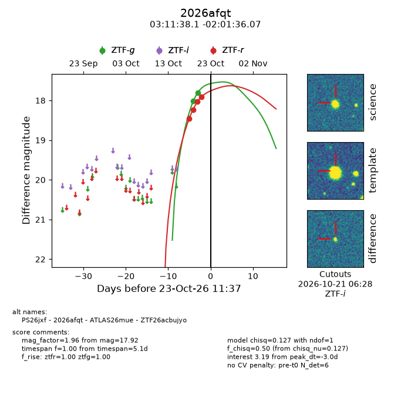
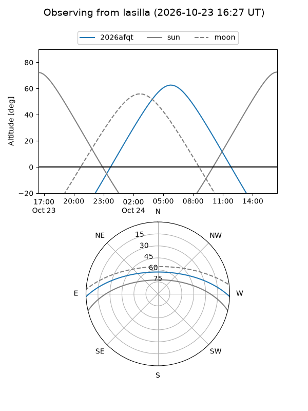
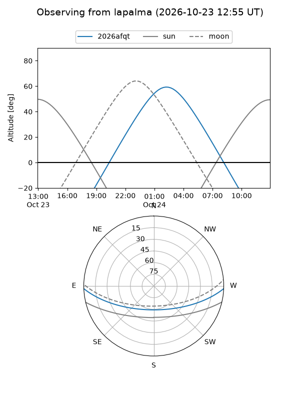
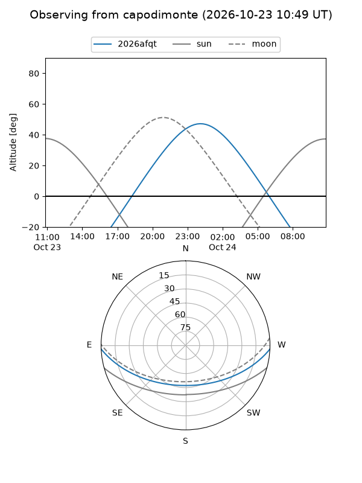
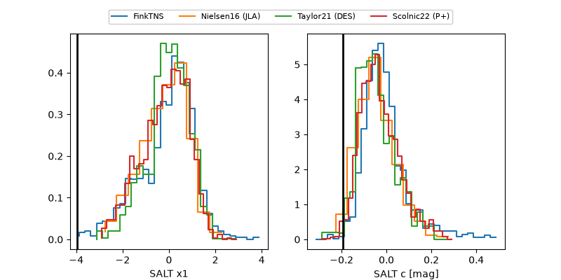

2026afqt
Target 2026afqt at 2026-10-23 11:39
Aliases and brokers:
FINK-ZTF: ztf.fink-portal.org/ZTF26acbujyo
Lasair-ZTF: lasair-ztf.lsst.ac.uk/objects/ZTF26acbujyo
ALeRCE-ZTF: alerce.online/object/ZTF26acbujyo
YSE-PZ: ziggy.ucolick.org/yse/transient_detail/2026afqt
TNS name: wis-tns.org/object/2026afqt
Direct TNS query: direct search
alt names
ZTF26acbujyo (ztf,fink_ztf)
2026afqt (tns,yse)
ATLAS26mue (atlas)
PS26jxf (panstarrs)
Coordinates:
equatorial (ra, dec) = 47.9087,-2.02669
equatorial (HMS+DMS) = 03:11:38.09,-02:01:36.07
galactic (l, b) = (182.1716,-48.09616)
Flags:
peak dt: -3.0
Photometry:
last ztfg=17.81, ztfr=17.92
2 ztfg, 4 ztfr detections
Lightcurve

Visibility



Additional plots
